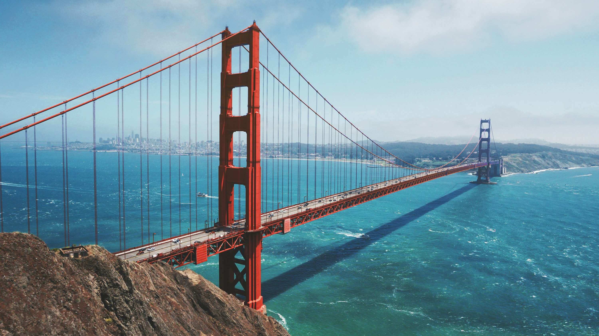

Famous Landmarks

The Golden Gate Bridge is a famous, 1.7-mile-long orange suspension bridge in California connecting San Francisco to Marin County across the Golden Gate Strait
Choose a Landmark:
Golden Gate Bridge
Machu Picchu
Niagara Falls
Small
Medium
Large